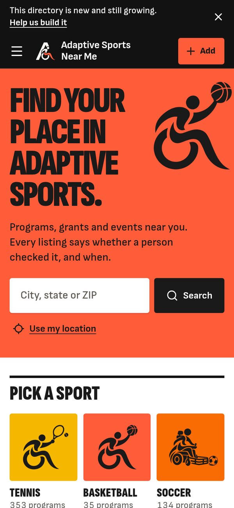
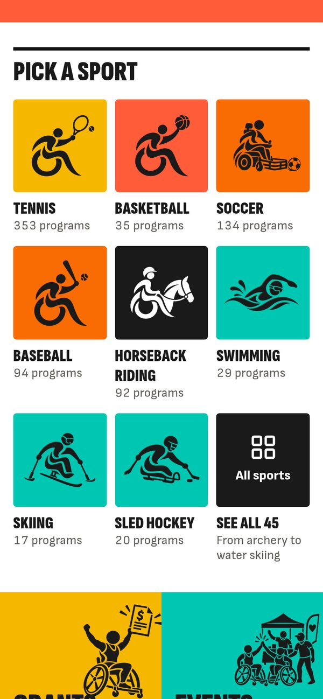
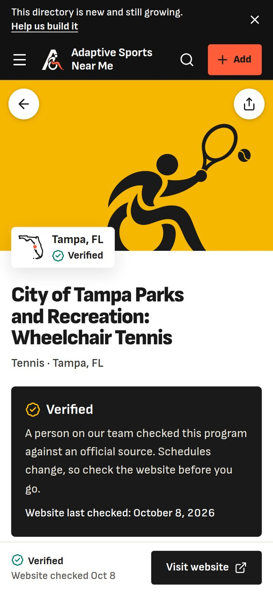
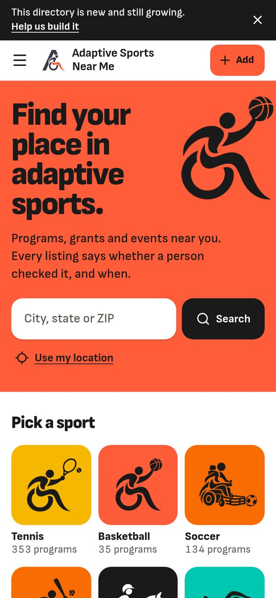
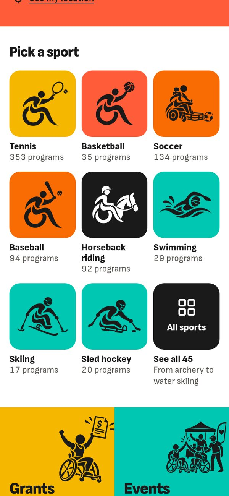
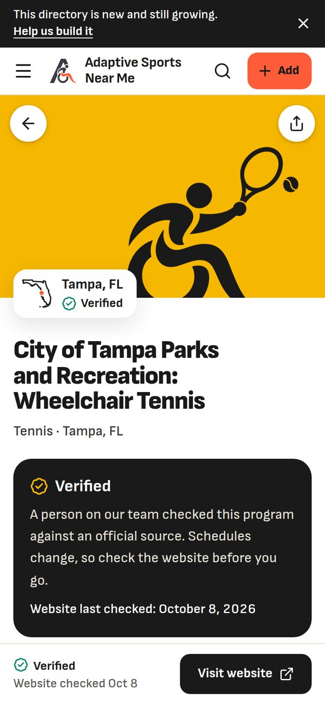
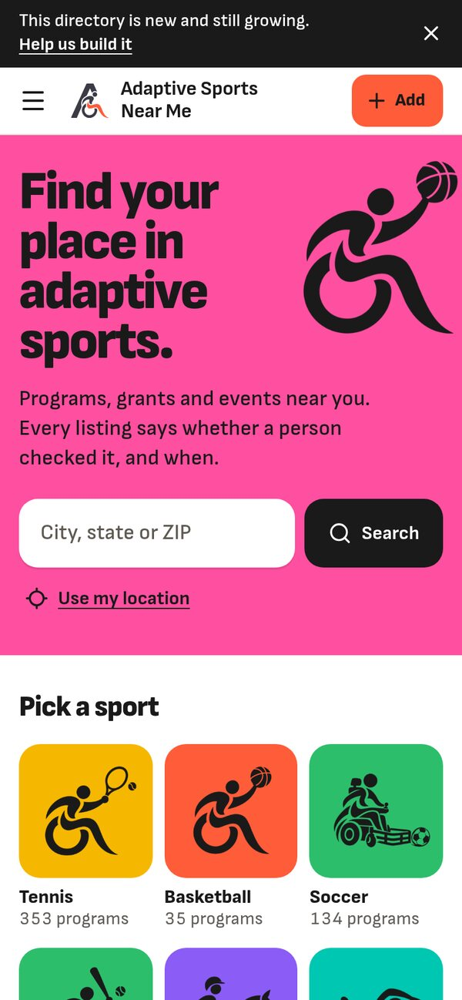
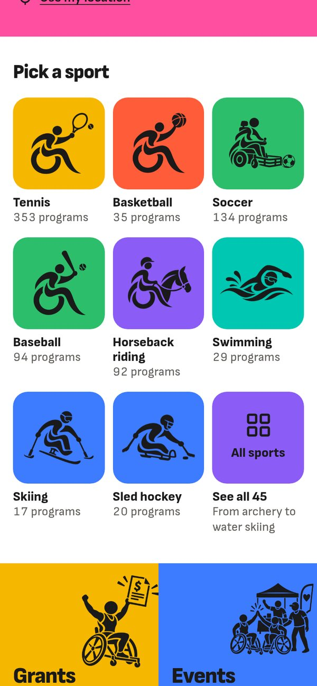
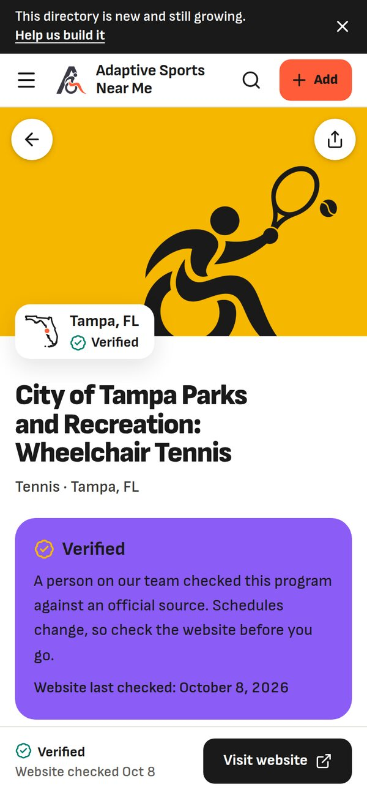

The same three screens three ways: C as it is today, C with four more colours added, and C with the same four colours made sharper. Swipe each row.
Laura's four colours and black, nothing added. The edge comes from a black header, condensed uppercase headlines from the same Sofia Sans family, square corners and thick black rules. It reads like a sports brand.



Four colours and black, with rounded corners and sentence-case headlines.



More colour does not make it easier to use: no one can remember what eight colours mean, so labels still do the work. It mostly makes the site look younger.


